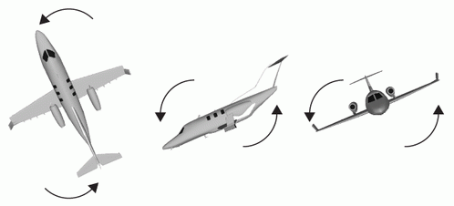
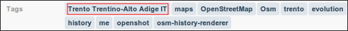
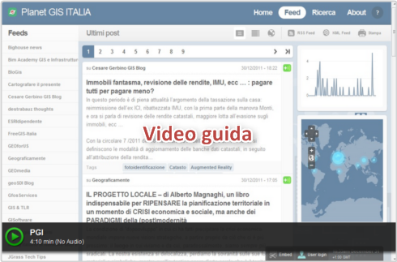

Archivio per la categoria ‘Strumenti’
4 giugno, 2012 | di Andrea Borruso
 Nell’ultimo post ho scritto dell’imminente rilascio di una nuova versione di Geopaparazzi: il momento è arrivato e da oggi è possibile scaricare Geopaparazzi 3. Si tratta di una major release con diverse succose novità:
Nell’ultimo post ho scritto dell’imminente rilascio di una nuova versione di Geopaparazzi: il momento è arrivato e da oggi è possibile scaricare Geopaparazzi 3. Si tratta di una major release con diverse succose novità:
- map tiles personalizzate
- mappe vettoriali
- migliorie agli strumenti OpenStreetMap
- nuovi tag per la creazione di moduli più complessi e utili
- migliorie nella gestione dei bookmark con avvisi di prossimità agli stessi
- nuove feature di import e export
- esposizione di semplici API che consentono la gestione dei progetti sul web
Per tutti i dettagli vi rimando al post di Andrea ed al wiki del progetto.
Posted in osgeo, Strumenti | No Comments »
10 aprile, 2012 | di Antonio D'Argenio
A short story
Some years ago I was working for my company together with my colleagues Andrea and Fabio. That was one of the rare times we had some money to use to integrate our equipment. We work in GIS, mostly web-mapping and numeric cartography, and at that time we were lucky people with new graphic workstations, a small sized but new brand server farm and all we needed to do our job at the best. We had just completed a project related to some environmental issues and one of the problems we collided with was the lack of geodata at the scale we were looking for. At that time, public Italian geographic data, especially those referred to the region where we live and operate, were not so easily available nor frequently updated. This is a well known problem for people working with GI so Fabio told us “Why don’t we buy a small airship to collect our own information?”
Starting from this moment we spent about one month looking for the right aircraft.
At the beginning we had rough and confused ideas of what to do. Obvious constraints were: affordability, reliability and ease of use. But we were also looking for GPS control, flight planning and everything could be connected with mapping. With our surprise we easily found a number of carriers (not only airships but also planes, helicopters, paragliders, multi-copters and so on). Some solutions were of industrial type, other substantially homemade but we were looking also for a partner, someone who could help us to start and this item became part of our “requirements list”. We also found that our budget allowed to buy more than one aircraft so we decided to concentrate on two different kinds of vehicles: a paraglider to be used in photogrammetric surveys of large areas and a small quadricopter which we planned to employ on smaller areas. In those weeks we also found Daniele, a colleague and a friend that introduced us to aerial mapping with small, Remotely Piloted Aircrafts.
What sRPA are
RPA means Remotely Piloted Aircraft. An “s” at the beginning stands for small.
Remote control implies that the pilot is not sitting on-board but generally remains on the ground surface, controlling the flight using a radio device.There are a number of equivalent ways to call this kind of aircrafts. Probably the most common are UAV (Unmanned Aerial Vehicles) and drone (even if this last term originally indicated military targets). Other diffused English abbreviations are UAS (Unmanned Aerial Systems), RPV (Remotely Piloted Vehicles), ROA (Remotely Operated Aircrafts). In Italy, ENAC recently introduced the acronym APR (Aeromobile a Pilotaggio Remoto).
Since remote control is a base characteristic to define an RPA, there are a lot of crafts kinds falling in this category. Beside obvious differences (such as those between fixed and rotary wings) other important parameters to take in account are: size, weight, range, maximum altitude and endurance. These last parameters are those commonly used to classify unmanned aircrafts. The table below illustrates an old classification of the UAV Association that uses the above mentioned parameters to define classes and, even if not the most updated, can be used as guide.
| Class |
Abbr. |
Range
(km) |
Altit.
(m) |
End.
(h) |
Mass
(kg) |
| Micro |
µ |
< 10 |
250 |
1 |
<5 |
| Mini |
Mini |
< 10 |
150 to 300 |
< 2 |
150 |
| Close Range |
CR |
10 to 30 |
3000 |
2 to 4 |
150 |
| Short Range |
SR |
30 to 70 |
3000 |
3 to 6 |
200 |
| Medium Range |
MR |
70 to 200 |
5000 |
6 to 10 |
1250 |
| Medium Range Endurance |
MRE |
> 500 |
8000 |
10 to 18 |
1250 |
Low Altitude
Deep Penetration |
LADP |
> 250 |
50 to 9000 |
0.5 to 1 |
350 |
Low Altitude
Long Endurance |
LALE |
> 500 |
3000 |
>24 |
< 30 |
Medium Altitude
Long Endurance |
MALE |
> 500 |
14000 |
24 to 48 |
1500 |
Small RPA are those falling within the micro and mini classes. If you look at the table, you easily understand why they are so attractive for professionals and SMEs working on mapping of small areas (up to tens of hectares). They are often so lightweight and small that you can carry them in the back of your car, but they can fly high and far enough to be employed to work. Furthermore they are enough safe. For instance: most of the small RPA are equipped with electric engines, which means that there is no fuel flying over your heads. Some RPA, such as multicopters, are VTOL (Vertical Take Off and Landing) aircrafts so they don’t need runways and can start to fly from very small surfaces.
On the other hand, it’s important to notice that these objects have specific limitations that you must never forget. You should never fly over people or lose the sight of your drone. Wind, obstacles (such as electric cables or poles), electromagnetic interferences are enemies. You should also remember that, even if most of these objects are smaller and lighter than models and ultralight crafts, when you use them to work they are considered in all respects aircrafts.
I’m not an engineer, so I cannot deepen into technical issues but there are few important tech notions that you must have in mind if you want to deal with small drones. The most relevant are those related to some subsystems that are barely common to every UAV: GPS, IMU, communication and guide systems.
GPS measures the drone position during the flight. Some small drones also use the GPS for safety issues. For example, if you lose the radio contact with him, the drone can use the GPS to maintain its position until communication is restored.
IMU stands for Inertial Measurement Unit. An IMU is an electronic system that, using accelerometers and gyroscopes, measures speed and attitude of the aircraft during the flight. All the information you receive about the yaw, pitch and roll angles of your UAV came from its IMU.

From left to right: Yaw, Pitch and Roll angles. These angles define the aircraft attitude and information about them is provided by IMU.
This information reaches you thanks to a communication system that continuously transmits flight data to the ground. Generally these data are received by a ground base station and displayed along with other telemetry data using a software application.
Since you need to pilot the aircraft, communication between you and your drone is always bidirectional. The drone talks with you through telemetry, you talk with him using a radio control. Some small drones are also able to fly autonomously since they are capable to automatically execute planned flights. This last characteristic is an essential requirement if you want use them for mapping purposes.
Application to civil purposes
RPA technology has been originally developed for military purposes. This is the reason why the word “drone” often evokes war scenarios. When I did my first web survey to choose which drone to buy, I was impressed by the number of military sites related to drones.
Nevertheless, civil use of UAVs, especially the small ones, is growing. This is essentially due to the reliability achieved by these systems along with their cheapness and ease of use (if compared with conventional manned aircrafts).
Besides the applications in which they are used as point of view, there are a lot of technical fields where the use of a sRPA is helpful. The table below lists some of them.
Scientific
Applications |
Civil
Engineering |
Industry and
Utilities |
Public
Administration |
Civil
Protection |
| Precision Farming |
Photographic surveys on buildings, bridges, dams, etc. |
Preventive inspection of energy infrastructures |
Monitoring of construction and mining abuses |
Emergency monitoring |
| Archaeology |
2D and 3D modeling |
Monitoring of utilities infrastructures |
Illegal dumping monitoring |
Prevention of critical events |
| Geology |
Energy performance of buildings |
|
Monitoring of construction sites and public works |
|
| Environmental Studies |
|
|
Documentation |
|
In all these fields, your drone is not simply an eye in the sky but can be used to collect measures. If you use a camera as payload, you can collect the right number of images to realize a photogrammetric survey. If you change the camera with a multispectral device you can collect Remote Sensing data. You could also use active sensors, such as LIDAR, but due to the low load capacity of small UAVs (typically ranging between 0.2 and 5 kg) and high power requirements, is not so easy to find the right payload.
Geomatics
Spatial information is a pervasive content and geomatics entered in different ways in most of the aspects of our life. With reference to the technical use of small drones, geomatics is both a way and a scope.
As I said before, flight plans are important if you want to retrieve data for mapping (e.g. photogrammetric data) and spatial tools can be efficiently integrated in flight plan design process. This happens because flight plans are based on carrier (and target) position, so all the details of the flight plan (route, acquisition points, etc.) can be correctly set or calculated starting from a GIS environment. Better: the whole planning process could be confined within a dedicated geospatial platform. Even better: geospatial applications represent the right environment to display and analyze most of the data you have collected.
Since when you plan a flight is because you have some goal, this goal shapes planning activities. If I want to measure the concentrations of some chemical compounds, probably I just need to define flight route and altitude. If I want to realize a photogrammetric survey, my needs will extend to camera parameters or images overlap and sidelap.

When you define Overlap and Sidelap of a flight plan you are setting the front and side superposition of frames.
These examples are not randomly chosen, because both can lead to mapping:
- spatialized chemical measurements easily lead to thematic mapping,
- photogrammetric survey can be used to generate orthophotos.
It is important to know that not all the drones allow automatic flights and not all the drones allow the same degree of automation. For example, our quadricopter is a very sophisticated tool that permit to define all the flight details (takeoff and landing points, route, trigger points or trigger frequency, camera zoom, camera pitch and roll angles and so on). On the other hand, our paraglider just allows to define 12 waypoints and we are forced to manually trigger the camera (is up to you to decide which is my favourite …).
Geomatics & Photogrammetry
Photogrammetry is probably the most diffuse technique used in combination with small drones.
In my experience, the photogrammetric approach is a swiss knife for a number of application fields. You can use variations of the same basic techniques to realize metric images and 3D models of the ground surface, models of buildings, bridges, quarry fronts.
If you want to use aerial photos for mapping purposes, one of the key issues is DSM generation. Digital Surface Models are three-dimensional representation analog to DTM. Differences between them are related to the inclusion (DSM) or exclusion (DTM) in the model of objects, such as buildings, located on the ground surface. Since to produce orthophotos you need to project your images on a model of the ground surface, if you want to employ your aerial pictures to generate orthophotos, you need to pass through a DSM (the good news are that, if you have collected your pictures following the right scheme, you have all the information needed to DSM generation). Once you have processed your images in order to obtain a DSM, there are other things you can do besides generating orthophotos. For instance, you can drape your images onto the model to obtain useful (and also beautiful) photorealistic 3D metric models.

Orthomosaic draped on a DSM. This image refers to an archaeological site in Western Sicily. From Borruso et al. (2011) Atti 15a Conf. Naz. ASITA, pp. 471-478
Models based on image processing can be integrated with those produced with other methods.
For instance, in some applications, coupling low altitude aerial photogrammetry with Laser Scanning, helps to complete high resolution and precision measurements of buildings with those parts (such as roofs) that are inaccessible from the ground.
In some workflows, you could need to integrate satellite data with data acquired with sUAV. This happens because of the higher resolution needed or since clouds mask some part of the satellite image or because you need to record a time series with frequencies not allowed by satellite return time.
Low Altitude Remote Sensing
Aerial images can be considered a special case of use of sUAV in the more general Low Altitude Remote Sensing (LARS) scenario so, even if photogrammetry is probably the most diffuse technique connected with sUAV usage, there is a lot of space for other employments.
Infrared imagery (both near and thermal) are good examples in this direction.
Near Infrared (NIR) is the region of the electromagnetic spectrum falling between 0.75-1.4 µm. A number of objects reflects (i.e. plants chlorophyll) or adsorb (i.e. water) the incoming solar radiation in this region. NIR data can be acquired using dedicated sensors or modifying commercial cameras (including compact cameras). Thermal cameras record information in the Thermal Infrared (TIR), mostly between 7–14 µm. These cameras don’t use CCD or CMOS sensors, but a special kind of detector called microbolometer that is capable to identify differences in temperature and, if correctly calibrated, to measure temperature values.
If you combine NIR data with images collected within the visible (VIS) range, you can use this multispectral dataset for various applications. Precision Farming, Preventive Archaeology, water pipeline monitoring or environmental studies are examples correctly scaled on the operational capabilities of sUAV.
TIR data can be used alone or in association to multispectral information to perform more complex analysis. For instance, you can use a thermal camera mounted on a UAV to measure energy performance of buildings or you can combine thermal and multispectral information to carry out surveys on illegal dumping.
Legal and tech issues
The examples we did since now represent the most common cases of use of sUAV for technical and scientific purposes.
The most natural question that we can do now is: if they are so reliable, quick, flexible and cheap, why sUAV are still relatively uncommon?
There is more than one answer to this question and the most relevant are related to some legal and technical issues.
The first critical issue is the poor definition of a general regulatory frame focused on the UAV use, that disadvantages also the diffusion of small drones. As we said before, these carriers are often lighter and safer than aeromodels or ultralight aircrafts but, even if these crafts can fly in conventional aerial space without limitations, sUAV cannot. This prohibition is related to their use. Roughly: if you do fly something with purposes other than your pleasure, you are doing aerial work and you must be subjected to rules. Most small companies interpreted the lack of rules as an implicit permit and this worked until small drones were unknown objects. This not correspond to the present situation, where an increasing number of potential players has tested the utility of light drones in the generation of services and sUAV increasingly appear on newspapers and TV. Due to this interest national and international authorities are trying to define a frame and a set of rules which recognize the special nature of these crafts.
Circular 328 – Unmanned Aircraft Systems (UAS) published on March 2011 by the International Civil Aviation Organization(ICAO), is devoted to inform national authorities about the ICAO perspective on the integration of UAS into non-segregated airspace and to underline the basic differences between manned and unmanned aviation. The circular addresses a wide range of topics (such as collision avoidance, air traffic services, airworthiness and certification, personnel licensing and so on) and aims to provide guiding material for future developments of regulatory frames. The US Federal Aviation Administration (FAA) recognizes that small UAS could “experience the greatest near-term growth in civil and commercial operations because of their versatility and relatively low initial cost and operating expenses” but, until now, no rules about commercial use of small drone have been released.
European countries generally do not allow commercial use of small UAS with the exception of the United Kingdom, where Civil Aviation Authority (CAA) grants some permisions.
There are also a number of technical issues the first of which is the lack of dedicated sensors. Load capacity of small drones is a hard constraint that limits the employ of professional tools. Even if miniaturization of aeronautical devices is a constant process, most of the active sensors, such as LIDAR, are still too heavy to be mounted on a small drone. For this reason passive sensors, such as optical and thermal cameras, are the most diffused in daily practice. Other kind of tools, like electronic noses, even if already available are relatively rare.
Other topics belonging to this line are connected to future technical development that in a next future will improve the sUAV capabilities. Just to report a list of the most interesting:
- sense and avoid obstacles in autonomous flight
- ability to cooperate in formation flight
- increasing of endurance
- enhancing intelligence on board.
Communities and information
If reading this article has somehow intrigued, perhaps may interest you to know that there are a number of discussion groups centered on sUAS. If you want an access point, I suggest to write one of the RPAsynonyms in the group search of Linkedin.
There also associations focused on UAV. Among the most relevant, is important to cite UVSInternational, a non-profit association which includes unmanned vehicle systems (so, in this case, not only UAV) manufacturers, service companies and researchers. In these months it is also being founded the Associazione Italiana UAS which, as UVS International, is open to the all the players of the UAV chain that operate in Italy.
If you want to find more information on the topics covered in this article there are some specialized web sites that you can refer to. One of my favourite is suasnews.com which provides a daily updated information on UAS world.
Because of the strong relation between drones and geomatics, UAV news appear on various websites focused on spatial topics (try to search for UAV in GeospatialWorld, which also published an interesting review on UAVs).
Relation between UAV and Geomatics have been also the key topic of an international conference which was taken in Zurich in September 2011. The conference title was UAV-g 2011 – Unmanned Aerial Vehicle in Geomatics and here you can access to the proceedings.
___________________
Posted in Strumenti | 1 Comment »
28 marzo, 2012 | di Alessio Di Lorenzo
Su TANTO abbiamo scritto in varie occasioni di jQuery e abbiamo visto vari esempi delle sue potenzialità nella creazione di interfacce efficaci ed esteticamente valide per le applicazioni web.
Esistono tantissime estensioni per questo popolare framework ed una delle mie preferite è sicuramente jqGrid, utilissima per chi sviluppa applicazioni web in ambito geospaziale.
La sua utilità nel nostro campo è presto detta: un’applicazione GIS, che sia desktop o web, non consiste solo della mappa, ma deve dare anche la possibilità a chi la usa di esplorare le informazioni associate agli elementi visualizzati, cioè gli attributi. jqGrid assolve benissimo il compito.
Gli esempi sul sito ufficiale offrono una buona carrellata delle possibilità del plugin e, insieme al dettagliato wiki, permettono di produrre le prime griglie in tempi brevi.
I formati di dati che jqGrid è in grado di importare e rappresentare sono molti e, tra questi, quello che ci interessa in particolar modo oggi è JSONP (JavaScript Object Notation with Padding).
In breve, si tratta di una tecnica che supera le restrizioni della same origin policy e permette di effettuare chiamate tra domini differenti. E’ bene sapere, comunque, che questa è una regola di sicurezza che, impedendo di eseguire script provenienti da siti esterni e “non fidati”, protegge l’utente da attacchi informatici detti XSS (Cross Site Scripting).
Ricorrere a JSONP è una delle strategie disponibili per aggirare questa politica, che risulta parecchio limitante per le applicazioni web che, come i Mash-up spaziali spesso citati su TANTO, fanno uso di dati provenienti da più fonti.
Il trucco si basa sulla capacità del tag html script di caricare file javascript, anche esterni e, all’occorrenza, eseguire del codice. Non mi dilungo oltre sull’argomento e rimando a wikipedia e a questo articolo su HTML.it per eventuali approfondimenti.
Vediamo subito un esempio. Come fonte di dati prendiamo il risultato di un query task lanciato verso un MapService ReST di ArcGIS Server. Il codice per ottenere la griglia di attributi è molto semplice e il risultato di sicuro effetto.
$('#grid').jqGrid({
url: 'http://sampleserver1.arcgisonline.com/ArcGIS/rest/'+
'services/Demographics/ESRI_Census_USA/MapServer/4/query',
datatype: 'jsonp',
postData: $.param({
where: "1=1",
returnGeometry: false,
outFields: "ObjectID,NAME,STATE_NAME,CNTY_FIPS",
f: "json"
}),
colModel: [
{name: 'ObjectID', label: 'ID', width: 60, jsonmap: 'attributes.ObjectID',sorttype:'number'},
{name: 'NAME', label: 'Name', width: 170, jsonmap: 'attributes.NAME'},
{name: 'STATE_NAME', label: 'State', width: 150, jsonmap: 'attributes.STATE_NAME'},
{name: 'CNTY_FIPS', label: 'FIPS', width: 60, jsonmap: 'attributes.CNTY_FIPS'}
],
caption:"ArcGIS Server 10 query",
toppager: false,
pager:"#pager",
rowList: [50, 100, 250, 1000],
rowNum: 50,
jsonReader: {
root: 'features',
repeatitems: false,
},
loadonce: true,
ignoreCase: true,
viewrecords: true,
height: '300',
width:'500'
}).jqGrid('navGrid', '#pager', {search:false, add: false, edit: false, del: false});
});
Il codice è volutamente semplice e ovviamente si può sostituire il valore della clausola where, qui passata come parametro e valorizzata con 1=1, con qualcosa di più utile (o dinamico).
Qui sotto potete vedere l’output della query in una tabella dinamica che offre la possibilità di consultare in modo ricco ed interattivo la nostra sorgente di dati spaziali d’esempio
Posted in Strumenti | No Comments »
13 febbraio, 2012 | di Andrea Antonello
Abbiamo appena rilasciato Geopaparazzi 2.6.0 nel market.
Era un bel po’ che aspettavo questa versione, perché è piena di funzionalità che in diversi stavamo aspettando. Vediamone alcune.
1) Supporto Openstreetmap
Questa è molto probabilmente la funzionalità più importante di questa versione. Ora siamo in grado di creare punti di interesse di tipo OSM (Openstreetmap) e sincronizzarli con un account OSM online.
Il primo passo consiste nell’attivazione della funzionalità nelle impostazioni:

Una volta attivo, se viene riavviato geopaparazzi, all’utente verrà chiesto se vuole scaricare le definizioni dei tag OSM. Queste rappresentano la libreria di simboli e descrizioni del tag OSM utilizzati per le varie tipologie di punti.

La vista mappa mostrerà una piccola icona OSM sull sua destra. Se trascinata, l’applicazione mostra le categorie OSM disponibili:

Se si seleziona una delle categorie, vengono presentati i tag di tale categoria:

Selezionando uno specifico tag, all’utente si apre la sceda di compilazione delle proprietà del tag.

Dalla vista delle categorie è possibile sincronizzare tutti i punti di tipo OSM con il proprio account OSM online. All’utente verrà chiesto di inserire una descrizione per il set di modifiche che sta caricando:

Se nei settaggi utente e password sono state inserite nel modo giusto, geopaparazzi si connetterà a un servizio WPS scritto e reso diponibile da Luca Delucchi. Il WPS caricherà i punti sull’account OSM definito nei settaggi. Ringraziamo Luca, che ha dato grande supporto nel capire le tecnicità in gioco sul lato OSM. Inoltre è stato lui a scrivere il servizio WPS e renderlo disponibile a tutti gli utenti di geopaparazzi e infine ha creato tutte le icone e definizioni dei tag OSM.
2) supporto OGC GeoSMS
Questa versione di geopaparazzi supporta le specifiche OGC GeoSMS. La funzionalità è attiva sia in uscita che per GeoSMS entranti.
Le impostazioni SMS permettono di attivare ”enable sms catcher”, che gestisce i GeoSMS entranti, mentre l’impostazione del “panic number” verrà usato per spedire messaggi nel formato GeoSMS.

Vediamo prima la spedizione dei GeoSMS. Geopaparazzi nella parte bassa della schermata principale ha una “panic bar”. Da li un utente può spedire un messaggio di richiesta di aiuto. Tale pulsante spedisce un messaggio contenente la posizione assieme ad una richiesta di aiuto secondo le specifiche OGC GeoSMS. Vi è anche un secondo pulsante che può essere utilizzato per spedire messaggi personalizzati. All’utente verrà proposto di inserire un testo da aggiungere al GeoSMS.

Cosa succede quando al telefono arriva un messaggio nel formato GeoSMS? Se la funzionalità è stata attivata nelle impostazioni, geopaparazzi elaborerà il messaggio entrante riconoscendone l’eventuale formato GeoSMS. Notificherà quindi all’utente l’arrivo di tale messaggio:

Dalla notifica sarà poi possibile aprire il GeoSMS con una delle applicazioni in grado di gestire l’infomazione ivi contenuta.

Quindi, selezionando al notifica:

Aprendo il messaggio con una delle applicazioni disponibili mostra che stavamo preparando alcuni screenshot per una presentazione al meeting italiano di utenti GRASS e GFOSS di Trieste:

3) realtà aumentata con mixare
In questa versione abbiamo aggiunto la possibilità di visualizzare i punti di interesse contenuti nella attuale vista di geopaparazzi in mixare. Questa funzionalità è stata descritta in passato in questo articolo.
Il punto di ingresso per la funzionalità è il menu principale della vista mappa:

4) creazione di un progetto nuovo

La creazione di un nuovo progetto ha sempre seguito un workflow poco naturale. Finalmente ora funziona come dovrebbe: all’utente viene chiesto un nome per il nuovo progetto, geopaparazzi crea tale progetto e lo carica.

5) i favoriti
Una cosa che a nostro avviso è sempre mancata, è un modo semplice e veloce per aggiungere dei punti favoriti. Abbiamo quindi aggiunto la possibilità di caricare i punti definiti in un file bookmarks.csv che dovrà essere copiato nella cartella di progetto (di solito geopaprazzi). Se il file è presente e se contiene i punti nella forma
Hotel Trieste, 45.642043,13.780791
Grassday Trieste,45.65844,13.79320
allora tali punti verranno caricati come favoriti.
Questa novità ha avuto come risultato già in fase di testing che ci si trovasse con un gran numero di favoriti e quindi con la necessità di poterli in qualche modo filtrare. E’ stata quindi aggiunto un campo di testo per semplificare la ricerca dei favoriti. Il testo ivi inserito verrà utilizzato per filtrare la lista di favoriti:

6) centra sul gps
Dopo aver rischiato una guida pericolosa per il solo motivo di spostare la mappa per tenere la posizione attuale al centro dello schermo, abbiamo aggiunto la funzionalità di centratura automatica della posizione gps. E’ possibile attivare tale funzionalità nelle impostazioni del gps:

7) grafici dei percorsi migliorati e zoom a selezione
Per ricordare questa funzionalità, ne avevamo già parlato qui.
8) osmdroid non disintegra più le mappe
Alcuni sviluppatori del progetto osmdroid (il motore che geopaparazzi usa per la visualizzazione delle mappe) hanno finalmente risolto il baco per il quale in particolari condizioni di mancanza di memoria, venivano cancellate tutte le mappe dal disco. Questo è stato uno dei bachi peggiori, visto che a diversi utenti era successo di scaricarsi le mappe per un rilievo su una zona e di trovarsi poi in montagna, offline e senza una mappa a disposizione. Il problema è stato finalmente risolto!!
9) la possibilità di usare la posizione calcolata dalla rete
Ci è stato chiesto diverse volte di attivare la possibilità di sfruttare la rete per la definizione della posizione. Anche se tale posizione può risultare un po’ fuorviante , abbiamo deciso di aggiungere tale funzionalità, che può essere attivata nelle impostazioni del gps. Non è possibile aggiungere note da gps in questa modalità, visto che la posizione può essere sbagliata anche di diverse centinaia di metri. E’ comunque possibile vedere la propria posizione nella vista mappa e inserire note basandosi sulla mappa.
Questa versione nasconde un cambiamento molto importante dal punto di vista tecnico. Il progetto geopaparazzi è stato diviso in due per meglio supportare la riusabilità dei componenti. Molte delle funzionalità sono state messe in una libreria separata. Questo progetto può essere utilizzato per costruire in modo veloce semplici applicazioni.
Abbiamo deciso di rilasciare questa versione, perchè gli srtumenti OSM hanno bisogno di testing e anche la questione della libreria potrebbe avere bisogno di altro testing. Anche la documentazione avrà bisogno di un’aggiornamento. Come al solito ogni aiuto è ben accetto! 
Installatevi l’applicazione dal market o scaricatela dalla area di download del progetto. Giocateci, testatela, mandateci commenti e bachi. Se avete domande, venite a trovarci nella mailinglist.
Ma sopratutto, godetevela!
[For an English version of this article, click here]
Posted in osgeo, Strumenti | 11 Comments »
31 dicembre, 2011 | di Andrea Borruso
Introduzione
Anni fa ho creato un aggregatore di feed RSS, con l’obiettivo di raccogliere le notizie provenienti dai blog italiani a tema GIS. L’ho fatto come “utilizzatore finale” (giuro che non è satira politica), per avere una fonte unica – e in particolare un solo feed RSS – da cui leggere notizie a tema. Gli associai anche un nome di fantasia: Blog GIS Italia.
Successivamente, quando TANTO era ancora un blog monoautore, l’ho inserito nel flusso di notizie di una delle colonne laterali del blog, e nel tempo ne ho curato (malamente) la manutenzione, l’aggiornamento del “motore” e quello delle fonti.
La sua ultima versione – che con un tocco di presunzione avevo classificato come “0.3” – era basata su Yahoo! Pipes e ne sfruttava pochissime funzioni (soltanto un po’ di regex sul titolo delle sorgenti degli RSS).
E’ uno strumento che mi è sempre stato utile, su cui desideravo investire un po’ di nuove risorse e dare finalmente vita alla versione “0.4”. Il momento è arrivato e nasce oggi, come progetto della redazione di TANTO, “Planet GIS Italia 0.4” (ebbene sì un nome un po’ diverso).
")
Planet GIS Italia 0.4
E’ una finestra sul mondo delle tecnologie e della cultura geospaziali, un punto di accesso e di scoperta centralizzato. Nulla di nuovo.
Esistono infatti già diversi aggregatori legati al mondo dei GIS. Tre esempi noti:
- Planet OSGeo, is a window into the world, work and lives of OSGeo members, hackers and contributors;
- Planet Geospatial, is a window into the world of geospatial technology;
- geoblogger.eu, is a feed aggregator of European geo-blogs and should serve as index and leverage networking for geo-minded people in that region.
Il nome è cambiato perché sono cambiati i criteri di selezione: ci sembrava riduttivo quello di aggregare “soltanto” le notizie/post/articoli provenienti dal mondo dei blog. Sono la fonte principale, ma non sono l’unica, né sempre la più ricca.
Ogni aggregatore sottostà a dei criteri di selezione, e quello principale di Planet GIS Italia (da qui in poi PGI) è “spaziale”: i contributi raccolti vengono dal nostro Paese (non sempre in senso stretto). Un altro criterio è ovviamente quello tematico.
Il risultato è un sito snello, un piccolo “televideo” tematico, che per scelta editoriale non ingloba interamente i post originali, ma soltanto una piccola parte.
Una piccola/grande novità di questo aggregatore, che lo differenzia ad esempio dai tre famosi di cui sopra, è il suo essere “geografico” non soltanto per i temi trattati, ma anche nel suo “cuore”. Infatti sugli elementi dei feed RSS sorgenti viene eseguita una procedura di geoparsing, con l’obiettivo di estrarre le informazioni spaziali eventualmente presenti in essi. Si tratta essenzialmente di una “caccia al
toponimo” che (se va a buon fine) consente di arricchire il dato originale con un’informazione che inizialmente (quasi sempre) non era presente: la posizione sulla Terra.
Uno degli output è ovviamente una mappa, in cui vengono raccolti – ed eventualmente aggregati in cluster – gli elementi archiviati in PGI.

Non crediamo però che l’elemento geografico sia il più importante. Ci piace infatti pensare che questo spazio possa essere soprattutto una fonte di scoperta e un ponte tra persone, esperienze e professionalità. Nel lavoro di redazione, nel raccogliere e proporre gli elementi da aggregare qui, noi stessi abbiamo letto per la prima volta dell’esistenza di alcuni siti, abbiamo appreso nuovi concetti e siamo entrati in contatto con delle belle persone.
Come funziona Planet GIS Italia
Planet GIS Italia è basato su MANAGING NEWS, un motore open source per l’aggregazione di notizie con le seguenti caratteristiche di base:
- Aggrega da sorgenti RSS/Atom a scelta
- Mostra le notizie come lista o su una mappa
- Consente di eseguire delle ricerche
- Da la possibilità di raggruppare le notizie in canali
- Esegue il geotagging delle notizie
- Espone i contenuti raccolti via RSS (e GeoRSS)
- Consente di condividere i contenuti su Facebook, Twitter o per email
Managing News è un prodotto (da febbraio del 2011) di Phase2 Technology, basato a sua volta su una personalizzazione di alto livello di Drupal 6, con alle spalle moduli che ci piacciono tanto, tra i quali OpenLayers. Il gruppo che ha originariamente sviluppato il prodotto è quello (fantastico) di Development Seed (per inciso una delle più belle homepage di tutti i tempi), e se ne ha evidenza nell’uso di MapBox come layer di base dell’interfaccia cartografica.
Il servizio di geoparsing è basato su Yahoo! Placemaker, un servizio che consente di sviluppare applicazioni location-aware, identificando i luoghi presenti in contenuti non strutturati (feed, pagine web, news, aggiornamenti di stato, ecc.) e restituendo i metadati geografici correlati.
Ad ogni luogo individuato viene associato un identificatore univoco WOEID (Where On Earth Identifiers), un tipo (una categorizzazione di base, per definire ad esempio se il luogo è una città o uno stato), un nome “formale” ed una coppia di coordinate.
Immaginiamo ad esempio che su su Planet GIS Italia venga raccolto il seguente contributo:
“Opendata, donazioni, Baviera: conti e racconti”
Il motore di PGI lo invia a Yahoo! Placemaker che lo processa e gli restituisce (se viene individuato un luogo) queste informazioni:
- woeId : 2345482 → gli associa un ID
- type : State → lo classifica
- name : Bavaria, DE → gli associa un nome formale
- centroid → ne restituisce la posizione del centroide
- latitude : 48.9172
- longitude : 11.408
Questo è l’output completo che viene restituito. Se volete “giocarci” un po’, lo strumento più comodo e didattico è sicuramente la console YQL. Da questo link potrete aprirla precaricata con una query sintatticamente corretta e basata sulla stringa di sopra (una volta aperta la pagina, dovrete fare click sul tasto “TEST” che si trova sotto la query).
Se il processing geografico restituisce valori, questi vengono associati agli elementi dei feed in due modalità principali:
- l’associazione di un tag con il nome del/i toponimo/i individuati (vedi immagine sottostante)
- l’associazione di una (o più) coppia di coordinate in modo da poter rappresentare la notizia su una mappa

Le notizie per le quali non è individuato un luogo vengono inserite comunque nel sito, ma non potranno essere mappate. Se le fonti originarie contengono però nativamente delle informazioni geografiche in forma di GeoRSS, queste vengono utilizzate automaticamente per posizionare la notizia sulla mappa, anche nel caso in cui il geoprocessing non abbia prodotto risultati.
Con in nomi dei luoghi e con le lingue le cose però non sono così facili. Perché c’è Prato e anche prato. Grazie a PGI ho scoperto anche che c’è una destinazione di viaggio a Hong Kong che da molto fastidio all’analisi dei testi italiani: “Che Ha”. Ma mi fermo perché il tema è molto specialistico, ed è necessaria un’altra penna e un altro post.
Per familiarizzare con l’interfaccia del sito abbiamo preparato una breve videoguida, che ne illustra le caratteristiche principali.

Sui feed
Se fai una indagine su tre classi dell’ultimo anno delle superiori, su 70 studenti di 18 anni nessuno sa cos’è Google Reader, 2 si informano in rete sui siti dei grandi giornali, e 70, cioé tutti usano Facebook.[1]
Un po’ tutti noi di TANTO siamo Feed RSS/Atom dipendenti. Se ne può “fare uso” nelle modalità più svariate, e l’elenco delle ricette che trovate sul meraviglioso ifttt ne è una prova. Purtroppo sono forse ancora visti (e utilizzati) come strumento di nicchia, mentre dovrebbero essere quasi per definizione uno strumento “pop”.
Anche i colossi dell’informatica ci mettono lo zampino, e in browser come Mozilla Firefox e Google Chrome il tasto per iscriversi ad un feed non fa parte della dotazione standard, ma è attivabile soltanto tramite un’estensione.
Un po’ di cura dovremmo mettercela anche noi che creiamo e diffondiamo RSS: i feed di TANTO ad esempio non superano ancora la validazione W3C. Costruendo questo spazio ho constatato anche che alcuni grossi siti del settore pubblicano i loro RSS con un corredo povero di informazioni (senza alcun tag e/o categorie).
Sorpresa e serendipità
If we’re going to encourage more innovation, it’s not enough for us to just dig in and work harder. We also need to encourage surprise and serendipity. We need to play each other’s instruments.[2]
Due delle emozioni tipiche nella quotidiana lettura dei feed RSS/Atom, sono per noi della redazione di TANTO lo spunto per farvi e farci dei grandi auguri per l’anno che verrà. Sorpresa e serendipità non bastano da soli a rendere un anno migliore di un altro, ma possono essere una delle scintille per fare partire quelle reazioni a catena che nel 2011 non si sono innescate.
Buon anno a tutti!
Posted in osgeo, Strumenti | 7 Comments »